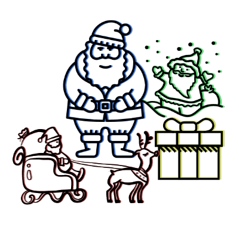

HO Ho ho!
Hem
Nedräkning
Tomtefakta
Min Önskelista
Min Familj
Hem
Finns det några snälla barn?
_____________________________________
Vet ni vad? Jag behöver eran hjälp med en liten sak. Jag börjar bli gammal och jag hinner inte längre med allt som jag brukade hinna med. Det är så kallt här på nordpolen och det är en plåga för mina knän att vandra ute i det bitande kylan för att hämta all post vid postkontoret. Skulle du vilja underlätta för mig och skriva ner din önskelistan här på min sida? Tack så mycket! Vi ses vid jul!
_____________________________________
slope
